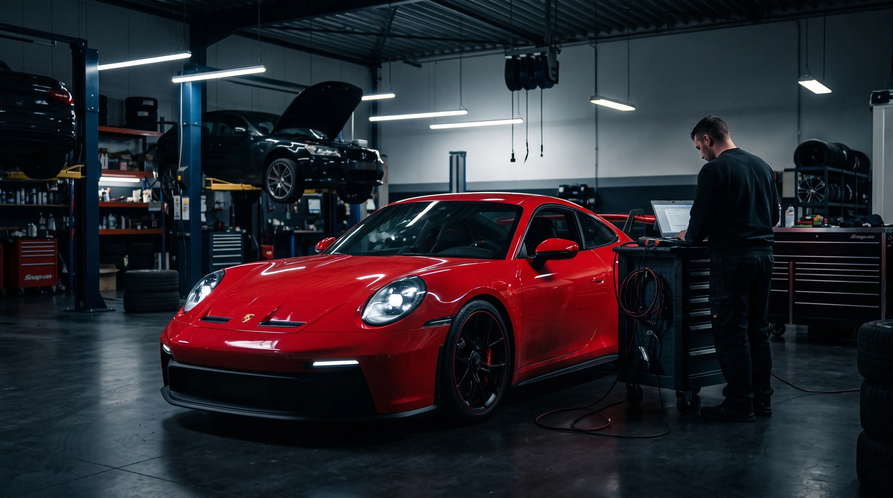
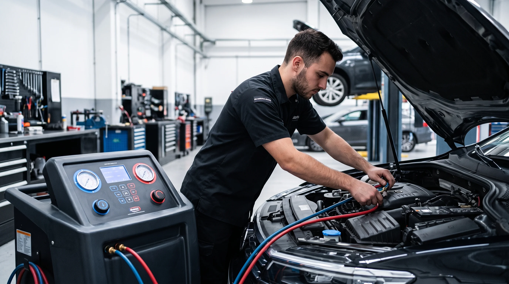
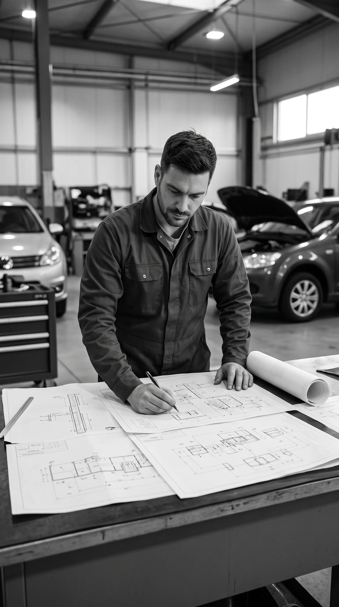
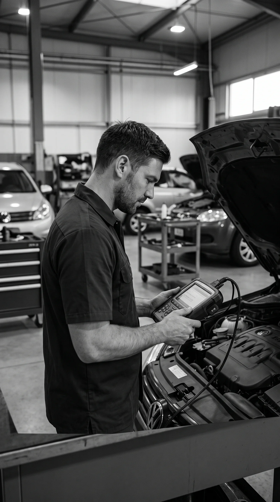
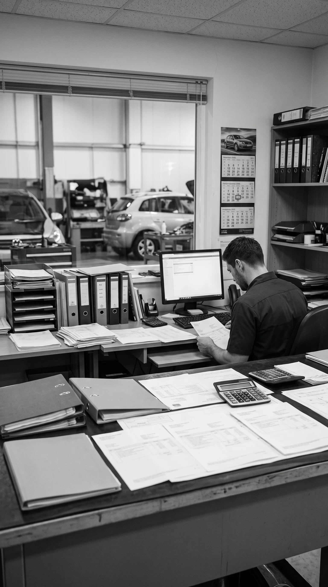

Diagnóstico Computarizado
y Mecánica de
Precisión en Tucumán.
Reporte técnico digital con fotos y videos por WhatsApp de cada pieza antes de autorizar cualquier reparación. Cero gastos sorpresa y presupuesto validado en menos de 2 horas.
Los 5 Servicios Principales de Box
Ingeniería y calibración automotriz con instrumental homologado, asignación de box técnico y trazabilidad completa.

1. Diagnóstico Electrónico Computarizado
Escaneo profundo de sensores, lectura certera de fallas OBD-II, testeo de módulos de inyección electrónica y reseteo técnico de testigos de tablero con instrumental Bosch homologado.

2. Mantenimiento Preventivo Integral
Cambio de aceite sintético según especificación de fábrica, sustitución de filtros (aire, aceite, habitáculo, combustible), inspección de correas y revisión multipunto de 25 puntos de seguridad.

3. Mecánica Pesada y Distribución
Cambio de kit de distribución completo (correa/cadena y bomba de agua), embragues, reparación de tapas de cilindro y ajustes de motor bajo tolerancias exactas con torquímetro digital.

4. Frenos, Suspensión y Tren Delantero
Rectificación de discos de freno, pastillas cerámicas u orgánicas de primera línea, reemplazo de amortiguadores, bujes, rótulas y alineación 3D computarizada de alta precisión.

5. Climatización Automotor Integral
Carga milimétrica de gas refrigerante ecológico con balanza digital de precisión, prueba de vacío para detección de microfugas UV y desinfección antibacteriana de ductos.
El Reporte Digital por WhatsApp: Ves lo que nosotros vemos antes de pagar
No creemos en presupuestos verbales sin evidencia. Cada vehículo ingresado pasa por una inspección fotográfica y de video en alta definición. Solo autorizás el trabajo cuando viste con tus propios ojos el estado de cada componente.
Video en fosa con audio explicativo del técnico
El mecánico matriculado señala el juego axial, fuga o desgaste en tiempo real mientras el auto está en el elevador.
Captura de pantalla de los códigos de falla OBD-II
Exportación del informe KTS Bosch con el código DTC exacto, sin inventar reparaciones innecesarias.
Desglose de repuestos nuevos vs. piezas sustituidas
Al retirar tu unidad te entregamos las piezas reemplazadas en cajas originales si deseás inspeccionarlas.
Hola Carlos! Terminamos el escaneo KTS de tu Amarok. Detectamos sensor MAP con valor descalibrado y pastillas de freno delanteras al 15% de espesor útil.
VIDEO: Medición de espesor con calibre en disco delantero derecho.
Perfecto, muchas gracias por el video. Autorizo el cambio de pastillas y el sensor. Procedan por favor.
Taller Homologado con Respaldo Legal
En Tucumán, no dejes tu automóvil en manos informales. Vértice Motores S.R.L. opera bajo normativas provinciales y nacionales estrictas.

Matrícula COPIT Nº 4812
Colegio Profesional de Ingenieros y Técnicos de Tucumán. Firmas de responsabilidad técnica en cada intervención pesada.

Bosch Car Service
Escáneres Bosch KTS, bancos de prueba de inyección common rail y osciloscopios calibrados semestralmente.

Factura A y B Electrónica
Vértice Motores S.R.L. Emisión inmediata para flotas comerciales, empresas del agro, contratistas y particulares.

Inspección de Repuestos
Conservamos y te entregamos cada pieza cambiada en la caja del repuesto nuevo. Cero dudas sobre sustituciones reales.
Garantía Escrita de 6 Meses o 10.000 km y Respaldo Profesional
Cada perno ajustado a par nominal, sensor recodificado y kit de distribución instalado cuenta con cobertura real sobre mano de obra y repuestos originales. Más de 12 años brindando seguridad mecánica comprobable en San Miguel de Tucumán y todo el NOA.
Vértice Motores S.R.L.
Av. Belgrano 2450, Tucumán
Preguntas Frecuentes
¿Cómo funciona el reporte digital por WhatsApp?
Antes de iniciar cualquier reparación, subimos tu vehículo a la fosa y te enviamos un video en alta definición mostrando exactamente dónde está la falla (ej: juego axial, fuga de fluidos) con la explicación de nuestro ingeniero. Así podés ver con tus propios ojos por qué sugerimos el arreglo, sin presupuestos verbales.
¿Tienen escáner original para mi vehículo?
Sí, operamos con escáneres Bosch KTS y osciloscopios de última generación, calibrados semestralmente. Nos permite leer códigos de falla (DTC) reales y reprogramar módulos de inyección, garantizando un diagnóstico electrónico certero.
¿Dan garantía por los arreglos?
Absolutamente. Todos nuestros trabajos de mecánica pesada, distribución y tren delantero cuentan con una garantía escrita de 6 meses o 10.000 kilómetros. Usamos repuestos OEM de primera línea y te entregamos la pieza vieja en su caja nueva para tu tranquilidad.
¿Cuánto demoran en pasar un presupuesto?
Una vez ingresado el vehículo al Box de diagnóstico, emitimos un presupuesto cerrado y detallado (con PDF adjunto) en menos de 2 horas. No hay gastos ocultos ni "sorpresas" de último momento.
¿Atienden empresas o flotas y dan Factura A?
Sí. Ofrecemos mantenimiento preventivo y correctivo para flotas comerciales, agro y empresas. Emitimos Factura A y B electrónica (AFIP) ideal para la deducción fiscal.